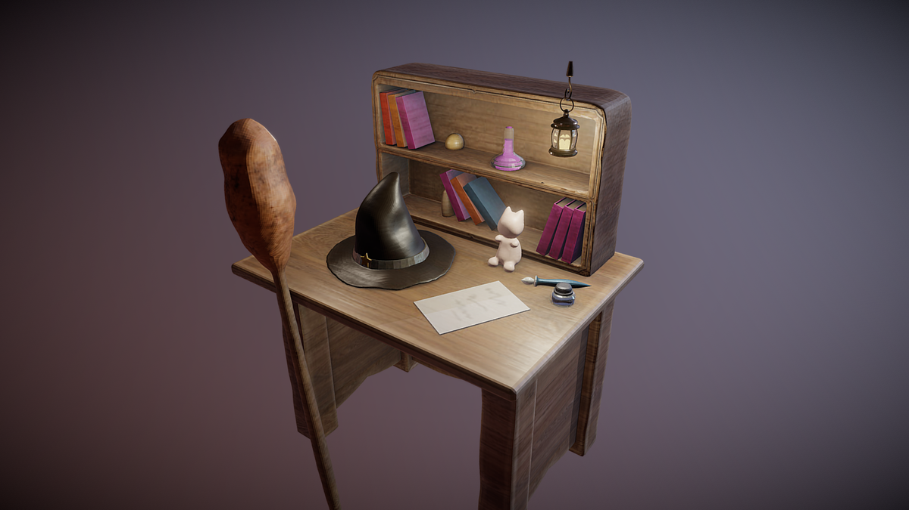
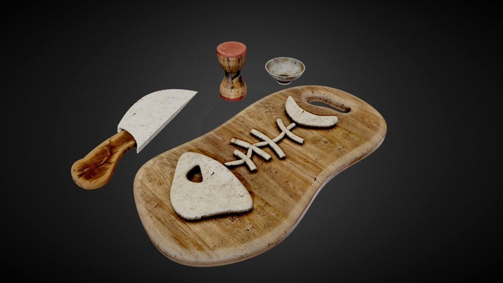
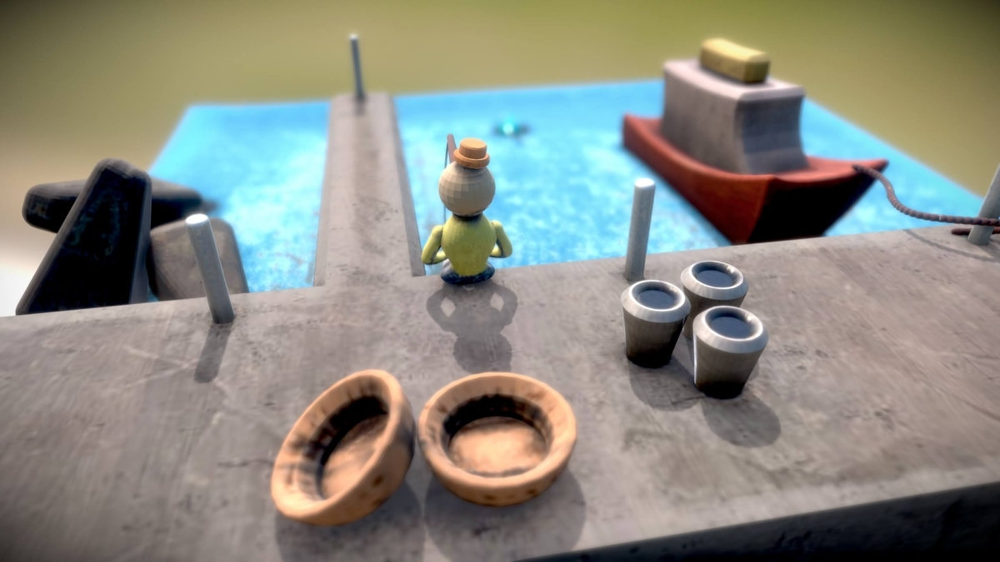

あけましておめでとうございます。
寒い日が続いていますが、どうか皆さん暖かくして、ご自愛ください。
（ブログでは基本、文体を「だ・である調」にしているので、以下、ですます調ではないことをご了承ください。）
このブログおよびFacebook含め、2024年は自分が実名で行っている活動について、様々な迷いがあった年だった。 実際、このブログもFacebookも、非公開にしている時間のほうが長かったように思っていて、2024年に一番活動記録のあるGitHubについても、本当に実名のまま続けるべきなのかという迷いが常にあって、それでも、オープンソースコミュニティへのリスペクトから、アカウントを残して、活動も継続している。
ただ、残したものばかりではなくて、削除したものもあって、ArtStationについては完全に削除した。 ArtStationは自分のほぼ唯一といっても良いポートフォリオだったので、迷いが多くあったのだけれど、約8ヶ月近くにわたるサポートとのやり取りの末、特に本人認証についての進展が見られなかったことから、やむを得ず削除することにした。
なお、こちらはいわゆる魚拓が残っていなくて、作品のオリジナルファイルだけがPCにある状態なので、いつかは別のプラットフォームなどで再公開する日があればと思うけれど、いくつか今残っているスクリーンショットだけここに貼っておこうかなと思う。（こういう、気の迷いのようなもので簡単に削除できてしまうところに、デジタルやサブスクの怖さを感じる今日このごろ。）1



さて、自分が昨年特に力を入れて取り組んだものに、自分が "Processing Reborn" と呼んでいる活動がある。
あまり自分の書いた記事を貼りたくない（いつも自分の調べたいことで自分の記事が出てきて半分しょんぼりしているので…）のだけれど、自分の思想が特に現れている記事が以下なので、参考程度に貼っておく。
あくまで自分の個人的な感想なのだけれど、前の記事でも書いたように、クリエイティブ・コーディング界隈がメインで使っているツールというのは、大きな過渡期を迎えているように思う。正直、TouchDesignerが一番盛り上がっていて、それ以外のツールは、OpenGL全盛期とも呼べる時期で活動が停止しているか姿形を変えていないものがほとんどで、そこからはUnity等のいわゆるゲームエンジン的なものや、あるいはTouchDesignerライクな、例えばNotchであったりTOOLL3のようなものにシフトしているのではないかと感じている。2
それはそれで良いことでもあるように思いながら、どこかで自分の原点はProcessingにあるような気がしていて、特にその思想を強く受け継ぐOpenFrameworksを時代の流れに合わせて進化させていきたいという思いがどこかにある。
ただ、自分自身で自覚があるのが、自分はどこか旅人や放浪者のようなタイプで、どちらかといえば比較文化学のようなものが得意で、一つのフレームワークを建築家のように強く構築していくタイプではないので、この活動をするにははっきりって実力不足が否めない。
今現状で、前述のBevy Engineを新たなフィールドとしていくのが最有力候補だと感じていて、例えばやっぱりエディタがほしいなと思ったらGodot Engineを使うのが良いと自分は思っている。
ただ、いずれはProcessingやOpenFrameworks (oF)の描画基盤を刷新していきたい思いがあって、個人的に実験や小さなコミットは毎日続けているものの、牛歩のような歩みになりそうな予感がしている。
そんななかで、昨日から新たに注目しているのが、RavEngineとRGLというもので、個人的にC++版BevyおよびC++版bevy_renderとも呼べるものであり、特にoFを進化させていく参考材料になるのではないかと注目している。
というのも、先日からProcessingをBGFX化する実験をしていて様々な大変さを感じていて、特に旧来のOpenGL等との互換性や、GLSL等のシェーダ言語の扱いに、BGFXの立ち位置の絶妙な（微妙な）バランスを見出していたのだけれど、RavEngineとRGLは、そこに一石を投じるものになるように感じている。
RGLは基本的にMetal APIをベースにクロスプラットフォームに書けるようにしたもので、OpenGLなど旧来のAPIは基本的に切り捨てていて、Android対応のためにOpenGL ESだけは使えるようにしようとしている片鱗があるように感じている。昨日出会ったばかりなのでまだ何もわかっていないのだけれど、基本的にはMetal以降のAPIをベースに、新規にクリーンでスッキリしたグラフィックエンジンを構築していこうという新しい風を感じる。
Bevy以来というか、他にも惜しいエンジンはいくつかって、特にWindows特化しているものや、Mac特化しているものは多かったのだけれど、Win/Mac/Linuxで、Metal/DX12/Vulkanにちゃんと対応できている数少ないオープンソースエンジンの一つがRavEngineなんじゃないかという気がしている。3
この先しばらくは、このRavEngineを掘り下げたり探求したりしていくんじゃないかと思いながら、それでも、BGFXやSokol等を使った今までの実験も大切にしながら、今後も少しずつ夢を追い求めていければと思う。
ちなみに余談として、Bevyが理想といいながらなぜBevyだけ書かないのかといえば、Rust言語が本当に理想的だと感じている一方で、Rust言語は人類にとって難しすぎるのではないかという思いがちょっとあって、そういう意味でMoonbitのような代替言語が出てきてくれることを常日頃望んでいる。（自分がGitHub等でSponsorしているものは、ほとんどこれに類するもの。）
自分がBevy一筋とならずに、RavEngineのようなものをついついつまみ食いしてしまうのは、前述の放浪癖とあわせて、そういう気の迷いがあるのかもしれないし、銀の弾丸はないとわかってはいても、MoonbitやMojoのような、次の革新を期待している自分がどこかにいるのかもしれない。